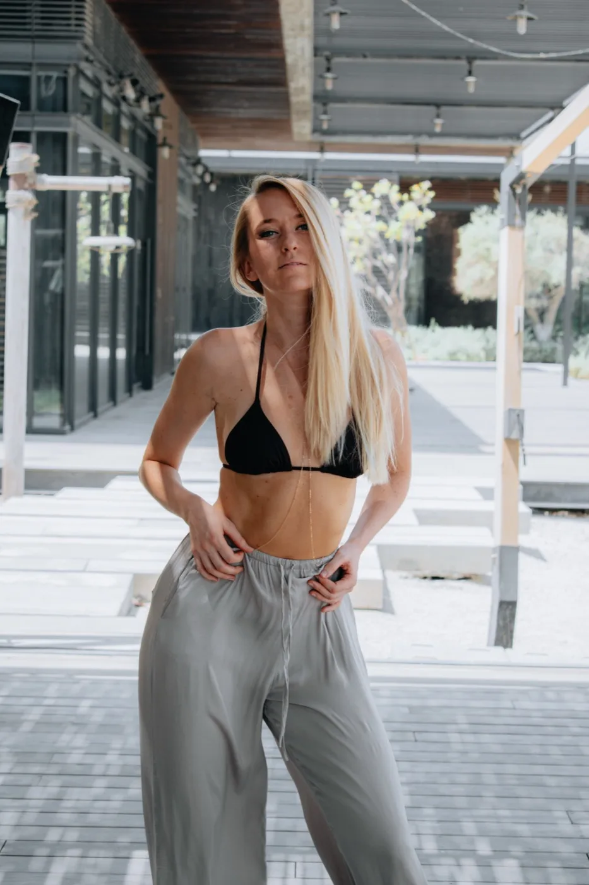
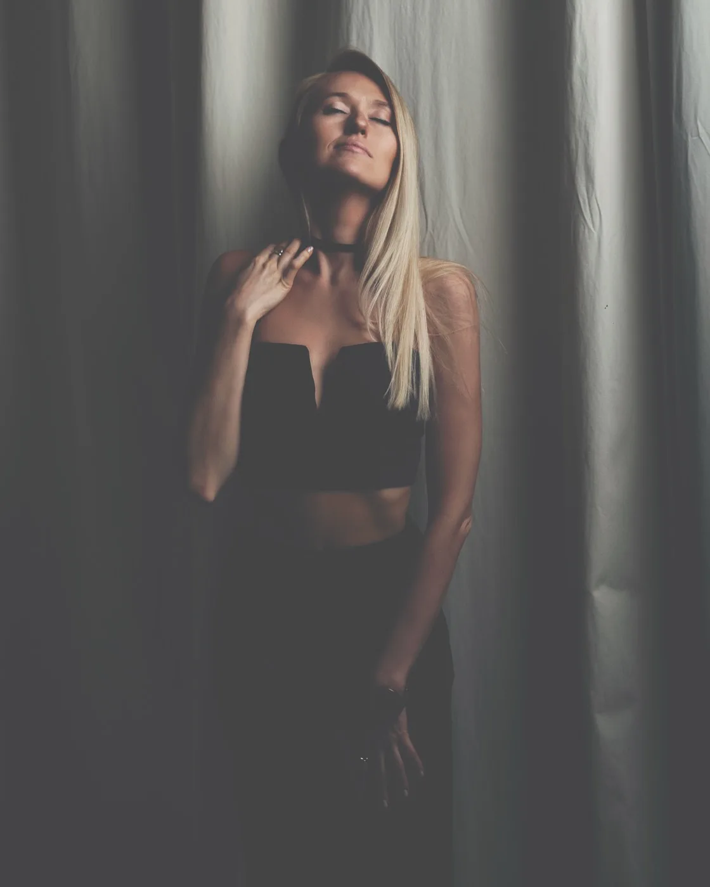
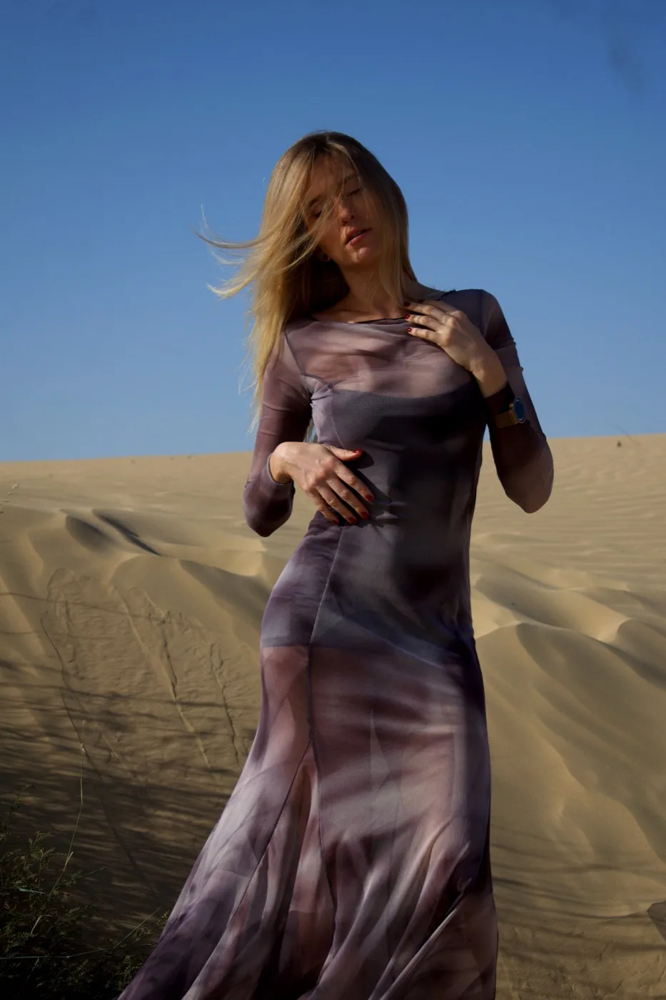
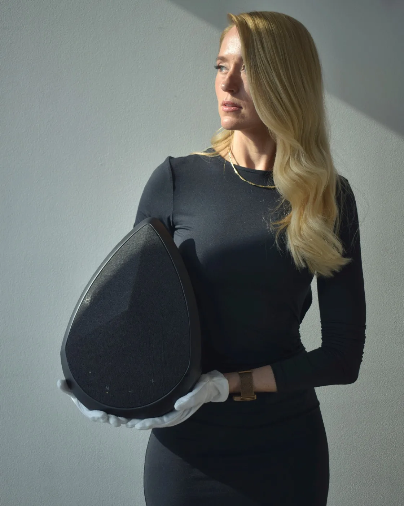

Before anyone books a shoot, there's one question underneath all the others: what's it actually like working with this photographer? Rather than answer that myself, I asked one of the models I've worked with the most to say it in her own words.
This is Olga. She's based in Ukraine and has shot with me five to six times across both commercial bookings and her own personal, non-commercial sessions. The video above is completely unscripted: I asked her to speak honestly about her experience, and this is what she said, unedited.
The full transcript
"Hello, my name is Olga, I'm from Ukraine and I've been shooting as a model with Hatim for five to six times, both commercial and non-commercial shootings, my personal ones. Each time I really enjoyed how everything is arranged, how professionally Hatim is communicating with a model, how respectful the communication is, and actually the result, the outcome are beautifully edited pictures, lots of them, and quite fast. So from my experience it was really nice and lovely work together. My 100% recommendation."
Why this is worth paying attention to
Olga isn't a one-time client reading a script for a favour. She's someone who's booked repeat sessions over time, for different reasons, which means she's had plenty of chances to simply stop coming back if any of it wasn't working for her. She didn't. Four things come up specifically in what she said, and they're the same four things I try to get right on every single shoot, not just the ones with a camera pointed at them.
Professional, respectful communication with the model. A high volume of finished images. Edits that are genuinely well done, not just fast. And a turnaround that doesn't leave you waiting weeks for a gallery.
A few frames from our shoots together
Since the testimonial mentions the edits directly, here's a small sample of the work itself: four different sessions with Olga across a city walk, a moody home shoot, the desert, and a fashion piece.




Four different sessions with Olga: city walk, home, desert, and fashion. Shot and edited by Photoczaro.
What you can expect working with me
If you're considering booking your first session, or your next one, here's what that looks like in practice, based on how Olga and other repeat clients describe it.
- Clear communication before the shoot: we talk through what the session is for, so there are no surprises on the day.
- Respectful direction on set: guidance without the shoot feeling rushed or transactional.
- A large number of edited photos: not a handful of highlights, a proper gallery.
- Fast delivery: finished, edited photos within days, not weeks.
- Room to come back: a lot of my work is repeat clients returning for their next shoot as their book grows.
If you're new to modeling entirely and want a sense of what a first session looks like from the ground up, I've written a full breakdown here: How to Start Modeling in Dubai With No Experience.
Commercial and personal work
One detail worth pulling out of Olga's testimonial: she's booked both commercial shoots and personal, non-commercial sessions with me. The approach doesn't change between the two. Whether a shoot is briefed by an agency or booked directly by a model building her own portfolio, the same communication and turnaround apply.
Frequently Asked Questions
Work with me
Based in Dubai. I work with models on commercial bookings, agency submissions, and personal portfolio sessions. WhatsApp is the fastest way to reach me.